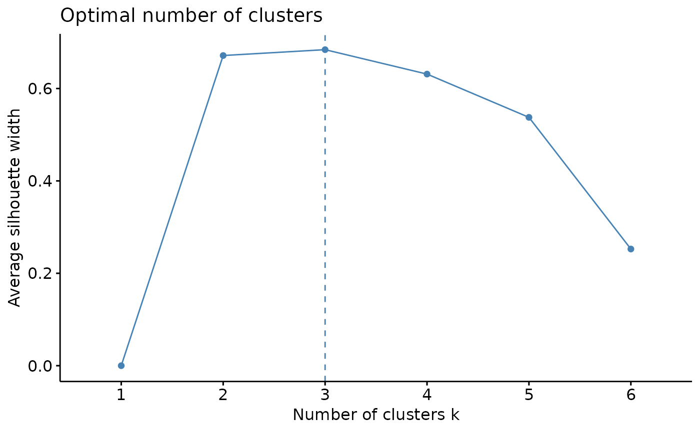
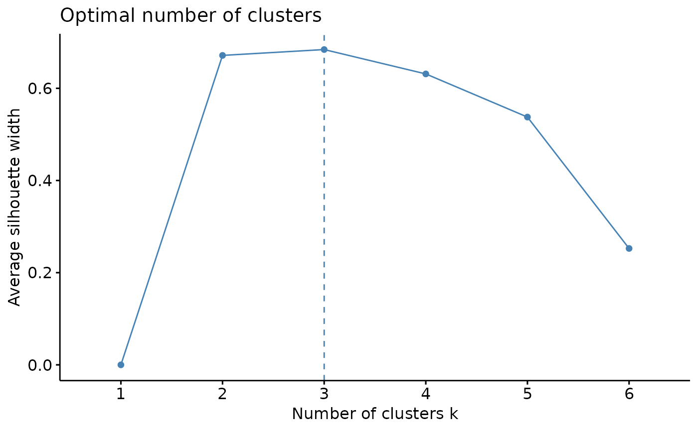

To help decide the number of cluster, three different methods are provided: total within cluster sum of squares, average silhouette coefficient, and gap statistics.
Usage
k_select(
musica,
model_name,
modality = "SBS96",
result_name = "result",
method = "wss",
clust.method = "kmeans",
n = 10,
proportional = TRUE
)Arguments
- musica
A
musicaobject containing a mutational discovery or prediction. A two-dimensional UMAP has to be stored in this object.- model_name
The name of the desired model.
- modality
The modality of the model. Must be "SBS96", "DBS78", or "IND83". Default
"SBS96".- result_name
Name of the result list entry containing desired model. Default
"result".- method
A single character string indicating which statistic to use for plot. Options are "wss" (total within cluster sum of squares), "silhouette" (average silhouette coefficient), and "gap_stat" (gap statistic). Default is "wss".
- clust.method
A character string indicating clustering method. Options are "kmeans" (default), "hclust" (hierarchical clustering), "hkmeans", "pam", and "clara".
- n
An integer indicating maximum number of clusters to test. Default is 10.
- proportional
Logical, indicating if proportional exposure (default) will be used for clustering.
Examples
data(res_annot)
set.seed(123)
# Make an elbow plot
k_select(res_annot, model_name = "res_annot", method = "wss", n = 6)
 # Plot average silhouette coefficient against number of clusters
k_select(res_annot, model_name = "res_annot", method = "silhouette", n = 6)

# Plot gap statistics against number of clusters
k_select(res_annot, model_name = "res_annot", method = "gap_stat", n = 6)
# Plot average silhouette coefficient against number of clusters
k_select(res_annot, model_name = "res_annot", method = "silhouette", n = 6)

# Plot gap statistics against number of clusters
k_select(res_annot, model_name = "res_annot", method = "gap_stat", n = 6)